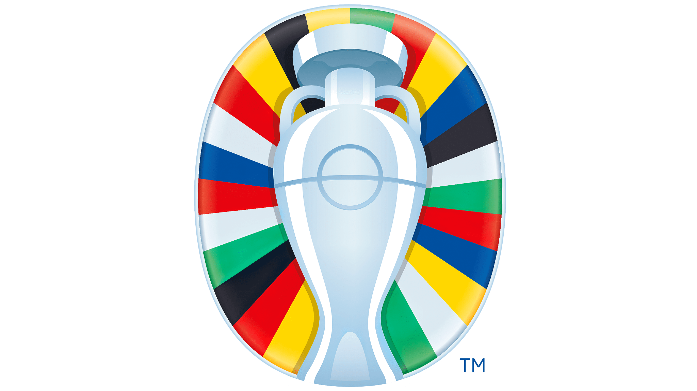

Application de pronostics
Site sur lequel pouvaient être fait les pronostics, avec de la documantation, des statistiques, ainsi que la gestion de comptes. Une base de données AirTable va avec le projet.
Ce sont les ressources complémentaires et les documents de travail liés au projet Euro 2024 : un tournoi sur un mois avec une application web de pronostics, de la documentation complémentaire pour aider les néophytes ainsi que le document d'animation du groupe WhatsApp lié au projet.
Site sur lequel pouvaient être fait les pronostics, avec de la documantation, des statistiques, ainsi que la gestion de comptes. Une base de données AirTable va avec le projet.

Construction d'un document de synthèse pour présenter chaque équipe afin d'aider les néophytes à appréhender la compétition. Accessible depuis l'application web.
Statistiques, avant-matchs, suivi des matchs, bilans ou encore anectodes. Support pour l'animation d'un groupe WhatsApp avec tous les participants.